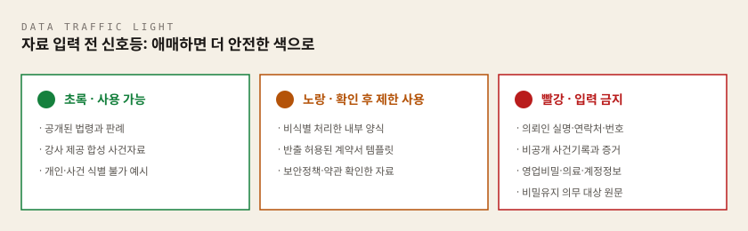
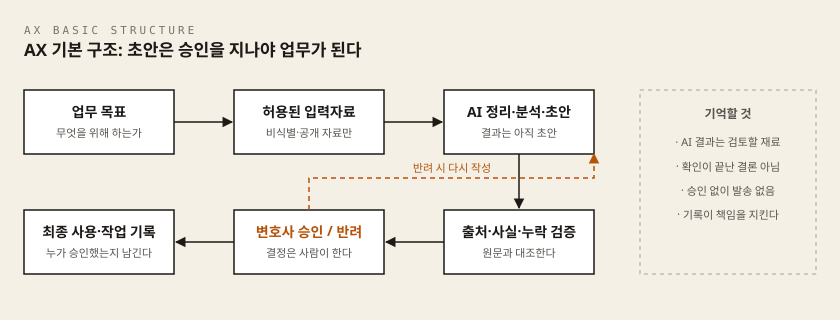

- 핵심 질문: AI에게 무엇을 맡기고, 변호사는 무엇을 책임져야 하는가?
- 이 차시의 완성 결과물: 나의 AX 업무 지도 1부
이 차시에서 준비할 것
| 항목 | 필요 여부 | 비고 |
|---|---|---|
| 설치할 프로그램 | 없음 | 이 차시는 웹브라우저만으로 진행합니다 |
| AI 서비스 계정 | 1개 필요 | ChatGPT · Claude · Gemini 중 하나, 무료 계정으로 충분 |
| 이전 차시 결과물 | 없음 | 첫 차시입니다 |
| 그 밖에 | 인터넷 되는 노트북, 30분 이상 방해받지 않는 시간 |
터미널(검은 명령 창)이나 코딩은 이번 차시에 전혀 나오지 않습니다. 웹브라우저에서 AI와 대화하고, 그 결과를 파일로 저장하는 것이 전부입니다.
실습 결과물을 담을 폴더를 아직 만들지 않았다면, 아래 "준비 4"에서 함께 만듭니다. 2차시부터 쓸 공통 실습 환경을 미리 갖춰 두고 싶다면 Windows 공통 준비 가이드를 먼저 훑어보아도 좋습니다. 이번 차시에는 필수가 아닙니다.
이 차시에서 처음 나오는 말
| 용어 | 한 줄 설명 |
|---|---|
| 생성형 AI | 사람이 글로 요청하면 글·표·초안을 만들어 주는 AI 서비스. ChatGPT, Claude, Gemini가 여기 해당합니다 |
| AI 에이전트 | 한 번의 질문·답변에 그치지 않고, 목표와 절차를 받아 여러 단계를 이어서 수행하는 AI |
| AX | AI로 일하는 방식 자체를 바꾸는 것. 도구를 쓰는 데서 그치지 않고 업무 절차를 다시 짭니다 |
| 전문가 주도의 AX | 도구를 만드는 사람이 아니라 그 업무에 책임지는 전문가(변호사)가 설계와 검증을 이끄는 방식 |
| 위임 수준 | 어떤 업무를 AI에게 얼마나 맡길지 나눈 세 단계. AI 보조 / 자동화 후보 / 사람의 판단 |
| 정보보호 위험 | 그 업무가 다루는 비밀·개인정보의 양과 민감도에서 오는 위험. 높을수록 사람의 검토를 강화합니다 |
| (자료 입력) 신호등 | AI에 자료를 넣기 전에 초록·노랑·빨강으로 입력 가능 여부를 판단하는 기준 |
| 비식별 처리(마스킹) | 이름·연락처·사건번호처럼 개인을 알아볼 수 있는 정보를 가리거나 역할명으로 바꾸는 조치 |
| 프롬프트 | AI에게 보내는 지시문. 우리가 입력창에 써 넣는 글 전체를 말합니다 |
| 새 대화(새 채팅) | 이전 이야기를 기억하지 않는 빈 대화창. 업무별로 새로 열어 섞이지 않게 합니다 |
| 마크다운 | 기호 몇 개로 표와 제목을 표현하는 간단한 글쓰기 방식. |로 칸을 나눈 것이 표입니다 |
이 차시에서 배우는 것
이 차시를 마치면 여러분은 다음 세 가지를 할 수 있게 됩니다.
- 생성형 AI, AI 에이전트, AX의 차이를 쉬운 말로 설명할 수 있습니다.
- 자신의 업무를
AI 보조,자동화 후보,사람의 판단으로 구분할 수 있습니다. - 실제 사건자료를 AI에 입력하기 전에 보안과 책임 위험을 스스로 판단할 수 있습니다.
시작하기 전에 한 가지를 분명히 해 두겠습니다. AI는 법률가를 대신해 책임지는 주체가 아니라, 법률가가 설계하고 검증해야 하는 도구입니다. AI를 단위기능 처리에 그치지 않고 업무 맥락 이해, 병목 해결, 맹점 감시까지 쓰려면 그 업무를 아는 전문가가 설계를 이끌어야 합니다. 이것이 이 과정이 말하는 전문가 주도의 AX입니다.
판단 기준, 비밀유지, 검토 절차, 책임 주체가 함께 설계되지 않은 AI는 그럴듯한 오류를 더 빠르게 퍼뜨리고 의뢰인의 권리와 신뢰를 해칠 수 있습니다. 그래서 이 과정은 AI를 더 많이 쓰는 법보다, 무엇을 맡기고, 어디에서 멈추며, 누가 검증하고 책임질지 정하는 법을 먼저 배웁니다.
왜 변호사가, 왜 지금 배워야 하는가
개념으로 들어가기 전에, 이 공부를 왜 해야 하는지부터 분명히 하겠습니다.
AI는 이미 사무실에 들어와 있습니다
배운 뒤에 쓸지 말지 결정할 수 있는 기술이라면 서두를 이유가 없습니다. 그러나 AI는 변호사가 도입을 결정하기 전에 이미 사무실 안에 들어와 있습니다.
- 직원은 안내문과 이메일 초안을 AI로 다듬습니다.
- 의뢰인은 AI에게 먼저 물어본 답을 들고 상담을 신청합니다.
- 상대방 대리인도 같은 도구로 자료와 서면을 준비합니다.
그래서 지금 가장 큰 위험은 AI를 쓰는 것 자체가 아니라, 기준 없이 쓰이는 것입니다. 어떤 자료를 입력해도 되는지, 누가 결과를 검증하는지, 잘못되면 누가 책임지는지 정해 두지 않은 채 각자 알아서 쓰는 상태가 이어지면, 비밀유지와 검증의 공백은 시간이 갈수록 커집니다. 기준을 세우는 일은 미룰수록 어려워지고, 그 기준을 세울 수 있는 사람은 결국 그 업무에 책임을 지는 변호사뿐입니다.
격차는 처리량이 아니라 다른 곳에서 벌어집니다
이것을 익힌 변호사와 그렇지 않은 변호사의 격차는 시간당 처리량에서 벌어지지 않습니다. 격차는 다음 세 가지에서 벌어집니다.
- 준비된 사실관계: 상담과 서면 작업에 들어가기 전에 인물, 날짜, 쟁점이 이미 정리되어 있는가.
- 검증된 근거: 인용하는 판례와 법령이 원문 대조까지 마친 상태인가.
- 기록이 남는 검토 절차: 누가 무엇을 확인하고 승인했는지 흔적이 남는 절차로 일하는가.
같은 사건을 맡아도 이 세 가지를 갖춘 쪽은 판단에 쓸 시간을 벌고, 갖추지 못한 쪽은 정리에 시간을 씁니다. 그리고 이 세 가지는 도구를 사는 것으로 생기지 않고, 업무를 설계하는 것으로 생깁니다.
이 기술의 주도권은 변호사에게 있습니다
요약, 초안, 분류 같은 단위 기능은 도구만 있으면 누구나 돌릴 수 있습니다. 그러나 성과는 단위 기능의 합이 아니라 다음 세 가지를 다루는 데서 갈립니다.
- 업무의 맥락: 이 문서가 누구에게, 왜, 어떤 위험 속에서 쓰이는지
- 업무의 병목: 전체 흐름에서 실제로 일이 막히는 지점이 어디인지
- 업무의 맹점: 결과가 그럴듯할수록 놓치기 쉬운 오류와 책임 공백이 무엇인지
이 셋은 그 업무를 실제로 책임져 본 전문가만 다룰 수 있습니다. 개발자는 도구를 만들 수 있지만, 법률업무의 맥락과 병목, 맹점을 정의할 수는 없습니다. 그래서 법률업무 AX의 주도권은 개발자가 아니라 변호사에게 있고, 이 과정이 도구 사용법이 아니라 업무 설계에서 시작하는 이유도 여기에 있습니다.
이 판단은 짐작이 아닙니다. 이 과정을 설계하기 전에 수강 대상 현업 법률가들에게 자체 사전 설문을 진행했습니다. 아래 수치는 모두 이 설문의 결과입니다. 응답자의 80.8%가 생성형 AI를 어느 정도 사용하고 있다고 답했지만, AI 에이전트 이해도를 1~2점으로 평가한 비율도 42.3%였습니다. 가장 큰 업무 부담으로는 판례·법령 리서치와 서면 초안 작성이 각각 61.5%로 꼽혔습니다. AI를 이미 써 본 분은 많지만, AI에게 어떤 일을 어떤 순서로 맡길지는 아직 낯설다는 뜻입니다. 그래서 이 과정은 도구 사용법보다 업무를 설계하는 법에 무게를 둡니다.
우리는 지금 무엇을 마주하고 있는가
시간 집약 업무의 원가 구조가 바뀌고 있습니다
법률 서비스에서 시간이 가장 많이 들던 일은 판례·법령 리서치, 서면 초안 작성, 방대한 기록의 검토였습니다. 이 업무들의 공통점은 훈련된 사람이 오래 들여다보아야 한다는 것이었고, 법률 서비스의 원가와 보수 구조도 그 시간 위에 서 있었습니다.
AI 에이전트가 바꾸고 있는 것이 바로 이 지점입니다. 며칠 걸리던 1차 정리와 초안 작업이 시간 단위로 줄어들면, 가치의 중심은 찾고 만드는 시간에서 판단하고 검증하는 시간으로 이동합니다. 정리와 초안 그 자체의 값은 점점 내려가고, 그 결과를 검증하고 책임지는 전문가의 판단은 상대적으로 더 귀해집니다.
법률 소비자가 먼저 AI에게 물어보고 옵니다
변화는 사무실 안에서만 일어나지 않습니다. 의뢰인은 이제 AI에게 먼저 물어본 답을 들고 상담에 옵니다. 그 답은 맞을 수도 있고, 그럴듯하게 틀렸을 수도 있습니다.
이때 의뢰인이 변호사에게 기대하는 것은 일반적인 정보의 전달이 아닙니다. 그 정보가 이 사건의 사실관계에 맞는지 가려내고, 틀린 부분을 바로잡고, 결론에 책임지는 판단입니다. 다시 말해 AI가 흔한 답변을 값싸게 만들수록, 검증하고 책임지는 전문가의 역할은 더 뚜렷해집니다.
"AI가 변호사를 대체하는가"라는 질문에 대하여
이 질문을 피하지 않고 정면으로 다루겠습니다. 이 과정의 답은 이렇습니다. 대체가 아니라, 전문가 주도의 재설계입니다. 의뢰인의 진술을 믿을지 판단하고, 전략을 정하고, 결과에 책임지는 일은 AI에게 넘어가지 않습니다.
그러나 직업이 통째로 대체되지 않는다는 말이 아무것도 바뀌지 않는다는 뜻은 아닙니다. 바뀌는 것은 업무의 구성입니다. 어떤 일을 AI에게 맡기고, 어디에서 멈추며, 누가 검증하고 책임질지를 변호사가 직접 다시 설계하는 것, 그것이 이 과정에서 말하는 AX입니다. 이제 그 설계에 필요한 개념부터 익히겠습니다.
개념 익히기
AI를 쓰는 것과 AI와 일하는 것은 다릅니다
질문 한 번으로 답을 받는 것과, 반복되는 업무의 순서와 검증 기준을 다시 설계하는 것은 다른 일입니다. 이 차시에서는 새로운 도구를 많이 소개하지 않습니다. 대신 여러분이 매주 반복하는 일 가운데 무엇을 줄일 수 있는지 찾아봅니다. 기억해 두세요. AI가 더 많은 일을 할수록, 변호사가 확인해야 할 지점은 더 분명해야 합니다.
세 가지를 구분합니다
먼저 자주 섞여 쓰이는 세 개념을 나누어 보겠습니다.
| 구분 | 쉬운 정의 | 법률업무 예시 |
|---|---|---|
| 생성형 AI | 요청할 때 답이나 초안을 만든다 | 상담 메모 요약, 이메일 초안 |
| AI 에이전트 | 목표와 절차에 따라 여러 단계를 이어서 수행한다 | 자료 분류 → 쟁점 추출 → 조사 목록 작성 |
| AX | 사람과 AI가 일하는 방식 전체를 다시 설계한다 | 접수부터 검토·승인·기록까지 재구성 |
핵심은 이렇습니다. AI 도입은 도구를 하나 추가하는 일이지만, AX는 업무의 입력, 순서, 역할, 검증, 책임을 다시 정하는 일입니다. 자동화가 많다고 좋은 AX가 아닙니다. 오류를 빨리 발견하고 멈출 수 있어야 좋은 AX입니다.
법률업무를 여섯 단계로 펼쳐봅니다
자신의 업무를 지도로 그리려면 먼저 업무를 단계로 나누어 보아야 합니다. 대부분의 법률업무는 다음 여섯 단계로 펼칠 수 있습니다.
- 접수: 의뢰와 자료를 받습니다.
- 정리: 사실관계, 인물, 날짜, 쟁점을 구조화합니다.
- 조사: 판례, 법령, 행정자료를 찾습니다.
- 분석: 주장과 증거를 대조하고, 반대 논리와 빈틈을 찾습니다.
- 작성: 의견서, 계약서, 서면, 안내문 초안을 만듭니다.
- 검토·결정: 출처와 사실을 확인하고 제출 여부를 판단합니다.
잠시 멈추고 스스로에게 물어보세요. 여섯 단계 중 시간이 가장 많이 드는 곳은 어디입니까? 그중 반드시 변호사가 직접 해야 하는 판단은 무엇입니까? 이 두 질문에 대한 답이 곧 여러분의 AX 업무 지도의 출발점이 됩니다.
AI가 잘 돕는 일
AI는 다음과 같은 일을 잘 돕습니다.
- 많은 자료의 형식과 항목을 통일하기
- 긴 기록에서 인물, 날짜, 금액을 찾아 표로 만들기
- 정해진 기준에 따라 누락과 차이를 확인하기
- 여러 초안을 만들고 표현을 비교하기
- 확인해야 할 질문과 추가 자료 목록 만들기
단, 주의할 점이 있습니다. AI가 빠르게 만든 결과는 검토할 재료이지, 확인이 끝난 결론이 아닙니다.
사람이 계속 책임져야 하는 일
반대로 다음 일들은 AI가 아무리 발전해도 사람이 계속 책임져야 합니다.
- 의뢰인의 진술을 믿을지 판단하는 일
- 사건의 목표와 전략을 정하는 일
- 어떤 주장과 증거를 채택하거나 버릴지 결정하는 일
- 화해, 합의, 소송 제기 여부를 결정하는 일
- 최종 서면을 제출하고 그 내용에 책임지는 일
한 문장으로 정리하면 이렇습니다.
AI는 선택지를 넓힐 수 있지만, 권리와 책임이 달린 결정의 주체가 될 수는 없습니다.
위임 수준은 세 단계로 나눕니다
어떤 업무를 AI에게 얼마나 맡길지는 다음 세 단계로 구분합니다. 이 표는 이후 실습에서 계속 사용하니 눈에 익혀 두세요.
| 단계 | 의미 | 예시 |
|---|---|---|
| AI 보조 | 사람이 지시하고 결과를 바로 검토한다 | 요약, 목차, 질문 목록 |
| 자동화 후보 | 정해진 입력과 규칙으로 반복 수행한다 | 문서명 정리, 기한 알림, 정형 안내 초안 |
| 사람의 판단 | AI가 참고자료만 제공하고 사람이 결정한다 | 소송 전략, 합의안, 최종 제출 |
자료 입력 전 신호등

AI에 자료를 입력하기 전에는 반드시 신호등을 확인합니다. 어느 색에 해당하는지 애매하면 더 안전한 색으로 판단하세요.
여기서 용어 하나를 미리 익혀 두겠습니다. 노랑 신호의 "비식별 처리"란 이름·연락처·사건번호처럼 개인을 알아볼 수 있는 정보를 가리거나 역할명으로 바꾸는 조치를 말합니다. 실무 동작으로는 마스킹이라고 부릅니다. 이 개념은 6차시(의뢰인과 안전하게 소통하기)에서 법령상 용어 구분까지 자세히 다룹니다.
초록: 교육용으로 사용 가능
- 공개된 법령과 판례
- 강사가 제공한 합성 사건자료
- 개인과 사건을 식별할 수 없게 만든 예시
노랑: 확인 후 제한적으로 사용
- 비식별 처리한 내부 양식
- 외부 반출이 허용된 계약서 템플릿
- 조직의 보안정책과 이용약관을 확인한 자료
빨강: 공개형 AI에 입력하지 않음
- 의뢰인 실명, 연락처, 주민등록번호
- 공개되지 않은 사건기록과 증거
- 영업비밀, 의료정보, 계정정보
- 비밀유지 의무가 적용되는 원문
AX의 기본 구조
앞의 개념을 하나의 흐름으로 이으면 AX의 기본 구조가 됩니다.

여기서 가장 중요한 원칙은 이것입니다. AI가 만든 초안을 곧바로 발송하거나 제출하지 않습니다. 확인과 승인 단계가 업무 흐름 안에 들어가 있어야 비로소 실무에 사용할 수 있습니다.
스스로 해보기
아래 다섯 가지 업무를 읽고, 각각을 AI 보조, 자동화 후보, 사람의 판단 중 어디에 배치할지 생각해 보세요. 지금은 답을 확정하지 않아도 됩니다. 왜 그렇게 분류했는지 이유를 한 줄씩 적어 두면, 수업에서 함께 답을 확인할 때 훨씬 깊이 있는 토론을 할 수 있습니다.
- 공개 판례 20건의 사건번호와 판단 요지를 표로 정리한다.
- 의뢰인에게 보낼 준비서면 제출 완료 안내문 초안을 작성한다.
- 사건의 승소 가능성을 확정하고 수임 여부를 결정한다.
- 계약서 두 버전에서 변경된 조항을 표시한다.
- 합의금 최종액을 결정해 상대방에게 자동 발송한다.
판단이 어려울 때는 두 가지를 떠올려 보세요. 이 업무가 잘못되었을 때 법적 영향이 얼마나 큰가, 그리고 권리와 책임이 달린 결정이 포함되어 있는가. 답은 수업 시간에 함께 확인합니다.
실습: 나의 AX 업무 지도 만들기
이제 이 차시의 결과물인 나의 AX 업무 지도를 직접 만들어 볼 차례입니다. 아래 「1차시 실습지」로 이어서 작성해 주세요. 내용을 파일로 남길 때는 lawyer-ax-worksheet-01-work-map.md라는 이름을 권합니다. 실습지에는 실제 의뢰인의 이름, 연락처, 사건번호를 적지 않으며, 업무 이름은 민사사건 상담 메모 정리처럼 일반화해서 씁니다.
실습은 다음 다섯 단계로 진행됩니다.
- 반복 업무 다섯 가지 적기
- 자동화 적합도 확인하기
- 위임 수준 정하기
- 안전한 입력 범위 정하기
- 작은 실험으로 바꾸기
실습지를 손으로 채운 뒤에는, 그 뒤에 이어지는 「실전 실습 랩」에서 같은 작업을 실제 AI와 함께 한 번 더 해 봅니다.
스스로 점검
실습을 마쳤다면 아래 세 문장의 빈칸을 채워 보세요. 이 세 문장이 완성되면 1차시의 목표를 달성한 것입니다.
- "이번 주에 AI 보조로 먼저 시험할 일은 ________입니다."
- "AI에게 맡기지 않고 내가 판단할 일은 ________입니다."
- "시험하기 전에 제거하거나 가릴 정보는 ________입니다."
다음 차시
2차시에서는 안티그래비티·헤르메스·파이(Pi) 실습 환경을 직접 설치하고 갖춥니다. 이어지는 3차시에서는 이번에 선정한 AI 보조 업무를 하나 고릅니다. 그 업무에 대해 AI가 사실을 추측하지 않고 원하는 형식으로 답하도록 법률업무 지시서를 작성합니다. 이번 차시에 만든 업무 지도를 계속 사용하니 잘 보관해 주세요.
실습 목표
반복되는 법률업무를 무작정 자동화하지 않고, AI가 도울 수 있는 범위와 사람이 직접 판단해야 하는 지점을 구분합니다.
이 실습지는 손으로 적는 부분입니다. 인쇄해서 펜으로 채워도 되고, 화면에서 메모장에 옮겨 적어도 됩니다. 파일로 저장한다면 이름은 lawyer-ax-worksheet-01-work-map.md를 권합니다. 이 파일은 뒤의 실전 실습 랩에서도 계속 이어 씁니다. AI는 아직 켜지 않습니다.
실습 규칙
- 실제 의뢰인의 이름, 연락처, 사건번호를 적지 않습니다.
- 진행 중인 사건의 구체적인 사실관계는 적지 않습니다.
- 업무 이름은
민사사건 상담 메모 정리처럼 일반화해서 씁니다. - 자동화 여부가 애매하면 더 안전한 단계로 분류합니다.
1단계. 반복 업무 다섯 가지 적기
최근 한 달 동안 반복했거나 시간이 많이 들었던 일을 적어보세요.
| 번호 | 업무 이름 | 언제 시작되는가? | 현재 결과물 |
|---|---|---|---|
| 1 | |||
| 2 | |||
| 3 | |||
| 4 | |||
| 5 |
예: 상담이 끝난 뒤 → 상담 메모에서 사실관계와 추가 질문을 정리한다 → 쟁점표
다섯 개가 잘 떠오르지 않으면 이렇게 물어보세요. "지난주 월요일부터 금요일까지 내가 두 번 이상 한 일은 무엇인가?" 또는 "미루고 싶어서 늘 저녁에 하는 일은 무엇인가?"
2단계. 자동화 적합도 확인하기
각 항목을 1점에서 5점으로 평가합니다. 표를 이득 점수와 위험 점수 둘로 나누어 적습니다.
2-1. 이득 점수 (높을수록 자동화 검토 가치가 큼)
- 빈도: 자주 반복될수록 5점
- 시간: 시간이 많이 들수록 5점
- 규칙성: 순서와 기준이 분명할수록 5점
- 표준화: 결과물 형식이 일정할수록 5점
| 업무 | 빈도 | 시간 | 규칙성 | 표준화 |
|---|---|---|---|---|
| 1 | ||||
| 2 | ||||
| 3 | ||||
| 4 | ||||
| 5 |
2-2. 위험 점수 (높을수록 사람의 검토를 강화)
- 정보보호 위험: 비밀·개인정보가 많을수록 5점
- 법적 영향: 오류의 영향이 클수록 5점
| 업무 | 정보보호 위험 | 법적 영향 |
|---|---|---|
| 1 | ||
| 2 | ||
| 3 | ||
| 4 | ||
| 5 |
해석 방법
- 빈도·시간·규칙성·표준화가 높으면 자동화 검토 가치가 큽니다.
- 정보보호 위험이나 법적 영향이 높으면 사람의 검토와 승인을 강화합니다.
- 점수만으로 자동화를 결정하지 않습니다. 점수는 어떤 업무부터 검토할지 정하는 참고자료입니다.
3단계. 위임 수준 정하기
각 업무를 한 곳에 배치하세요.
A. AI 보조
사람이 요청하고 결과를 바로 검토합니다.
- 해당 업무:
- AI가 만들 초안 또는 정리 결과:
- 사람이 반드시 확인할 내용:
B. 자동화 후보
입력과 기준이 정해져 있으며 반복 실행할 수 있습니다.
- 해당 업무:
- 자동으로 이어질 단계:
- 실행 전에 필요한 자료:
- 멈추고 사람에게 알려야 하는 조건:
C. 사람의 판단
AI는 참고자료만 제공하며 결정과 책임은 사람이 맡습니다.
- 해당 업무:
- AI가 제공할 수 있는 참고자료:
- 사람이 직접 내려야 하는 결정:
4단계. 안전한 입력 범위 정하기
첫 번째로 시험할 업무 하나를 고릅니다.
- 선택한 업무:
- 사용할 수 있는 공개자료:
- 익명화하거나 삭제할 정보:
- 입력하면 안 되는 정보:
- 사용할 AI 서비스의 보안정책 확인 여부:
확인 / 미확인 - 결과를 최종 승인할 사람:
5단계. 작은 실험으로 바꾸기
아래 문장을 완성하세요.
나는 ________ 업무에서 AI가 ________까지 돕게 하겠습니다.
AI의 결과는 ________와 대조하고, ________는 내가 직접 결정하겠습니다.
첫 실험에는 실제 사건자료 대신 ________를 사용하겠습니다.
동료 검토
짝과 실습지를 바꾸어 아래 세 가지만 확인합니다.
- AI가 맡을 범위가 구체적이다.
- 사람이 확인하고 승인할 지점이 있다.
- 실제 의뢰인 정보 없이 시험할 수 있다.
동료의 한 문장 제안
이 업무는 ________ 단계에서 한 번 더 사람이 확인하면 안전하겠습니다.
수업 종료 전 제출
- 이번 주에 시험할 AI 보조 업무 1개
- 장기적으로 검토할 자동화 후보 1개
- AI에게 맡기지 않을 판단 업무 1개
- 다음 차시에서 작성할 법률업무 지시서의 대상 1개
실습 개요
이 랩은 교재에서 배운 개념을 실제 AI 도구로 확인하는 핸즈온 실습입니다. ChatGPT, Claude, Gemini 중 하나를 직접 열고, 제시된 프롬프트를 붙여넣으며 따라 합니다. 워크북이 손으로 생각을 정리하는 자리였다면, 이 랩은 AI를 조수로 앉혀 놓고 같은 작업을 함께 해 보는 자리입니다.
이 랩은 수업 진도와 무관하게 각자 편한 시간에 혼자 진행하는 복습·자율 실습 자료입니다. LAB 1~3을 마친 뒤 시간 여유가 있다면, 마무리 앞의 "더 해보기" 섹션으로 이어가 심화 미션에 도전해 보세요.
구체적으로는 교재의 세 가지 핵심 개념 — 생성형 AI·AI 에이전트·AX의 구분, 업무를 AI 보조 / 자동화 후보 / 사람의 판단으로 나누는 3분류, 그리고 검증을 전문가가 이끄는 전문가 주도의 AX — 를 실제 AI와의 대화 속에서 되짚는 과정입니다. 개념이 흐릿해졌다면 교재의 해당 부분을 다시 펼쳐 놓고 진행해도 좋습니다.
실습 목표
- 나의 반복 업무 다섯 가지를 AI에게 설명하고,
AI 보조 / 자동화 후보 / 사람의 판단세 단계로 분류받아 봅니다. - AI의 분류에 스스로 반론을 제기하며, 정보보호 위험과 법적 책임 관점에서 분류를 바로잡는 검증 습관을 익힙니다.
- 검증을 마친 결과를 마크다운 표 형식의 "AX 업무 지도"로 완성해 저장합니다.
소요 시간: 총 45~55분 (LAB 1: 15분, LAB 2: 15분, LAB 3: 10분, 점검·저장: 5~10분). 계정을 처음 만든다면 준비 과정에 15분을 더 잡으세요.
준비물
- ChatGPT, Claude, Gemini 중 하나의 계정 (무료 계정으로 충분합니다) — 만드는 법은 바로 아래 "준비 1"
- 인터넷이 되는 노트북 또는 태블릿
- 1차시 실습지에 적어 둔 반복 업무 목록 (파일로 저장했다면
lawyer-ax-worksheet-01-work-map.md. 없어도 랩 안에서 새로 적을 수 있습니다) - 결과물을 저장할 메모장, 워드, 또는 노트 앱
완성 결과물: 나의 AX 업무 지도 1부 — 업무 5개의 위임 수준, 그렇게 정한 이유, 입력 금지 정보가 담긴 마크다운 표
실습 규칙
시작하기 전에 반드시 지켜야 할 규칙입니다. 이 랩에서 다루는 AI는 공개형 서비스이므로, 교재의 "자료 입력 전 신호등"에서 빨간불에 해당하는 정보는 절대 입력하지 않습니다.
- 실제 의뢰인의 이름, 연락처, 사건번호를 입력하지 않습니다.
- 진행 중인 사건의 구체적인 사실관계를 입력하지 않습니다.
- 업무 이름은
전세보증금 반환 상담 메모 정리처럼 일반화해서 씁니다. 누가 읽어도 특정 사건을 알 수 없어야 합니다. - 사람 이름이 꼭 필요하면
김가상,의뢰인 A,상대방 B같은 가명을 씁니다. - 자동화 여부가 애매하면 더 안전한 단계로 분류합니다.
- 실습에는 사무소 업무 계정이 아닌 실습용 개인 계정을 쓰는 편이 안전합니다.
이 규칙은 실습을 위한 임시 규칙이 아니라, 앞으로 실무에서 AI를 쓸 때마다 적용할 기본 규칙입니다. 오늘부터 몸에 익혀 두세요.
준비 1. AI 서비스 계정 만들기 (처음이신 분만)
왜 하는가: 이 과정 전체에서 AI와 대화할 창구를 하나 확보합니다. 셋 중 하나만 있으면 됩니다.
셋 다 무료로 쓸 수 있고, 이 랩의 실습은 무료 범위에서 전부 됩니다. 고민되면 아무거나 하나 고르세요. 나중에 바꿔도 됩니다.
| 서비스 | 접속 주소 | 특징 |
|---|---|---|
| ChatGPT | chatgpt.com | 사용자가 가장 많습니다. 자료가 많아 검색으로 해결하기 쉽습니다 |
| Claude | claude.ai | 긴 문서 정리와 한국어 문장이 안정적입니다. 이 과정 후반 도구와 잘 맞습니다 |
| Gemini | gemini.google.com | 이미 구글 계정이 있으면 가입 절차가 가장 짧습니다 |
따라 하기 (Windows 기준)
- 바탕 화면 아래 작업 표시줄에서 웹브라우저(Edge 또는 Chrome) 아이콘을 클릭해 엽니다.
- 화면 맨 위 주소창(현재 페이지 주소가 적힌 긴 칸)을 클릭하고, 위 표의 주소를 그대로 입력한 뒤
Enter키를 누릅니다. - 서비스 첫 화면이 나오면 오른쪽 위 또는 화면 가운데의 로그인 / 회원가입(Sign up) 버튼을 클릭합니다.
- 가장 간단한 방법은 Google 계정으로 계속하기입니다. 이미 쓰는 지메일 주소로 클릭 몇 번이면 끝납니다. 사무소 메일 대신 개인 메일을 권합니다.
- 이메일로 직접 가입한다면, 입력한 주소로 온 인증 메일의 링크를 클릭합니다. 메일이 안 보이면 스팸함을 확인하세요.
- 이름과 생년월일을 묻는 화면이 나오면 입력하고, 휴대전화 번호 인증을 요구하면 문자로 받은 6자리 숫자를 입력합니다.
예상 결과: 가운데 또는 아래쪽에 긴 가로 입력창이 있고 "무엇을 도와드릴까요?" 같은 문구가 보이는 화면이 나옵니다. 이 입력창이 앞으로 프롬프트를 붙여넣을 자리입니다. 왼쪽에는 지난 대화 목록이 들어갈 세로 영역이 있습니다 (지금은 비어 있습니다).
✅ 체크포인트: 입력창에 안녕하세요라고 치고 Enter를 눌렀을 때 AI가 한국어로 답하면 계정 준비 완료입니다.
잘 안 될 때
- 페이지가 영어로만 나오면: 그대로 두고 한국어로 질문하면 한국어로 답합니다. 화면 메뉴만 영어일 뿐 문제 없습니다.
- "지역에서 사용할 수 없습니다"류 안내가 나오면: 회사 네트워크가 막고 있을 수 있습니다. 휴대전화 핫스팟이나 집 인터넷으로 다시 시도하세요.
- 유료 결제 화면이 뜨면: 결제하지 말고 화면 구석의
X또는 "나중에 / 무료로 계속"을 클릭합니다. 이 랩은 무료로 충분합니다. - 로그인 후 첫 화면이 안내 팝업으로 덮여 있으면: "다음 → 시작하기"를 끝까지 눌러 팝업을 닫습니다.
준비 2. 새 대화 여는 법
왜 하는가: AI는 같은 대화창 안의 앞 내용을 계속 참고합니다. 다른 주제가 섞이면 엉뚱한 답이 나오므로, 실습은 깨끗한 새 대화에서 시작합니다.
따라 하기
- 화면 왼쪽 위를 봅니다. 연필과 네모가 겹친 아이콘, 또는
+표시, 또는새 채팅·새 대화·New chat이라는 글자가 있습니다. - 그 버튼을 한 번 클릭합니다.
- 왼쪽 목록이 접혀 보이지 않는다면, 왼쪽 맨 위의 줄 세 개 아이콘(≡)을 먼저 클릭해 목록을 펼칩니다.
예상 결과: 이전 대화 내용이 화면에서 사라지고, 입력창만 있는 빈 화면으로 돌아갑니다. 이 상태가 "새 대화"입니다.
✅ 체크포인트: 화면에 이전 질문·답변이 하나도 남아 있지 않으면 성공입니다.
잘 안 될 때
- 버튼을 못 찾겠으면: 주소창에 서비스 주소(
chatgpt.com등)를 다시 입력하고Enter를 눌러도 대부분 새 대화 화면으로 돌아갑니다. - 대화 제목을 바꾸고 싶으면: 왼쪽 목록의 대화 제목 위에 마우스를 올리면 점 세 개(
⋯) 아이콘이 나타납니다. 클릭 후 "이름 바꾸기"를 선택합니다.
준비 3. 대화를 학습에 쓰지 않도록 설정 찾기
왜 하는가: 공개형 AI는 사용자의 대화를 서비스 개선(모델 학습)에 쓰는 경우가 있습니다. 변호사에게는 비밀유지 의무와 직결되는 문제이므로, 실습 전에 설정을 확인하고 끌 수 있으면 끕니다. 오늘 실습은 가명·가상 자료만 다루지만, 그렇더라도 이 확인은 생략하지 않습니다. 실무에서 쓰기 전에 습관으로 굳혀 두는 것이 목적입니다.
이 설정의 메뉴 이름과 위치는 서비스가 개편되면 바뀝니다. 정확한 이름을 외우기보다 아래 요령으로 찾는 법을 익히세요.
따라 하기 — 공통 요령
- 화면 오른쪽 위 또는 왼쪽 아래의 사람 모양 아이콘(또는 내 이름·이니셜 동그라미)을 클릭합니다.
- 열린 목록에서
설정(Settings)을 클릭합니다. - 설정 창 왼쪽의 항목 이름 중
데이터·개인정보·활동·Privacy·Data가 들어간 것을 찾아 클릭합니다. - 그 안에서 "개선에 도움", "모델 학습에 사용", "활동 저장", "Improve the model" 같은 문구가 붙은 스위치(토글)를 찾습니다.
- 스위치를 눌러 꺼짐 상태로 바꿉니다. 보통 회색이면 꺼짐, 파랑·검정 등 색이 차 있으면 켜짐입니다.
서비스별로 대체로 이런 이름입니다 (버전에 따라 다를 수 있습니다)
| 서비스 | 찾아볼 경로 |
|---|---|
| ChatGPT | 설정 → 데이터 제어(Data controls) → "모두를 위한 모델 개선" 끄기 |
| Claude | 설정 → 개인정보 보호(Privacy) → "Claude 개선에 도움 주기" 끄기 |
| Gemini | 설정 및 개인정보 보호 → Gemini 앱 활동 → 사용 중지 |
예상 결과: 스위치를 끄면 "이후 대화는 학습에 사용되지 않습니다"류의 안내 문구가 뜨거나, 스위치 색이 회색으로 바뀝니다.
✅ 체크포인트: 해당 스위치가 꺼짐 상태이거나, 5분 찾아도 항목이 없어서 실습지 4단계에 미확인이라고 적었다면 다음으로 넘어갑니다.
잘 안 될 때
- 항목이 도무지 안 보이면: 못 찾았다고 실습을 멈추지 마세요. 실습지 4단계에
미확인으로 적고, 오늘은 가상 사례만 입력한다는 전제로 진행합니다. - 설정 창이 영어로만 나오면:
Data,Privacy,Improve,Training단어가 들어간 줄을 찾으면 됩니다. - 사무소에서 발급한 기업용 계정이면: 관리자 정책이 이미 적용되어 개인이 바꿀 수 없는 경우가 많습니다. 사무소 IT 담당자에게 "우리 계정은 대화가 학습에 쓰이나요?"를 한 번 물어 두세요.
중요: 이 설정을 껐다고 해서 의뢰인 실명·사건번호를 입력해도 되는 것은 아닙니다. 입력 금지 규칙은 그대로 유지합니다. 교재의 신호등에서 빨강에 해당하는 자료는 설정과 무관하게 넣지 않습니다.
준비 4. 결과물 저장할 폴더와 파일 만들기
왜 하는가: 오늘부터 매 차시 결과물이 쌓입니다. 처음에 자리를 정해 두면 나중에 찾아 헤매지 않습니다.
따라 하기 (Windows 기준)
- 바탕 화면의 빈 곳에서 마우스 오른쪽 버튼을 클릭합니다.
- 나온 메뉴에서
새로 만들기→폴더를 클릭합니다. - 폴더 이름을
AX실습이라고 입력하고Enter를 누릅니다. 전체 경로는C:\Users\사용자이름\Desktop\AX실습이 됩니다. - 만든
AX실습폴더를 더블클릭해 엽니다. - 폴더 안 빈 곳에서 오른쪽 버튼 →
새로 만들기→텍스트 문서를 클릭합니다. - 실습지를 이미
lawyer-ax-worksheet-01-work-map파일로 저장해 두었다면 새로 만들지 말고 그 파일을 열어 아래에 이어 붙이세요. 아직 없다면 아래처럼 새로 만듭니다. 파일 이름을lawyer-ax-worksheet-01-work-map.txt로 바꾸고Enter를 누릅니다. 이 과정의 실습 결과물은 모두lawyer-ax-worksheet-0N-내용형식으로 이름을 맞춥니다. 앞자리가 차시 번호여서 파일이 쌓여도 폴더에서 순서대로 정렬됩니다. - 그 파일을 더블클릭하면 메모장이 열립니다. 이 창을 닫지 말고 옆에 켜 둡니다.
(macOS: Finder에서 Command + Shift + N으로 폴더 생성, 텍스트 편집기로 파일 생성)
예상 결과: 화면에 브라우저(AI 대화)와 메모장 두 창이 떠 있습니다. Alt + Tab 키로 두 창을 오갈 수 있습니다.
✅ 체크포인트: 바탕 화면에 AX실습 폴더가 보이고, 그 안의 빈 메모장이 열려 있으면 준비 끝입니다.
잘 안 될 때
- 오른쪽 버튼 메뉴에
텍스트 문서가 없으면: 시작 버튼을 누르고메모장을 검색해 실행한 뒤, 나중에Ctrl + S로AX실습폴더에 위 6번과 같은 이름으로 저장해도 됩니다. - 마크다운 표를 예쁘게 보고 싶으면: 워드나 한글에 붙여넣어도 되고, 그냥 메모장에 텍스트로 두어도 실습에는 지장이 없습니다.
시작 전 점검
- ChatGPT, Claude, Gemini 중 하나에 로그인했다. (준비 1)
- 새 대화(새 채팅)를 열었다. 다른 업무 대화와 섞이지 않게 합니다. (준비 2)
- 대화 내용을 학습에 쓰지 않는 설정을 확인했다. 가명·가상 자료를 쓰더라도 이 확인은 생략하지 않습니다. 찾지 못했다면 "확인 필요"로 남겨 두고 진행합니다. (준비 3)
- 실습지에서 반복 업무 다섯 가지를 옮겨 적을 준비를 했다. 아직 없다면 지금 5분 안에 떠오르는 대로 적습니다.
- 결과물을 붙여넣어 저장할 문서 파일을 하나 열어 두었다. (준비 4)
복사·붙여넣기 요령: 이 문서의 회색 상자 안 글을 마우스로 드래그해 선택하고
Ctrl + C(복사), AI 입력창을 클릭한 뒤Ctrl + V(붙여넣기)를 누릅니다. 웹사이트로 보고 있다면 상자 오른쪽 위의 "복사" 버튼을 눌러도 됩니다. (macOS:Command + C/Command + V)프롬프트가 여러 줄일 때
Enter를 누르면 바로 전송됩니다. 줄을 바꾸려면Shift + Enter를 쓰세요.
LAB 1. 내 반복 업무를 AI에게 분류시키기
소요 시간 15분 · 난이도 쉬움
왜 하는가: 내가 혼자 정한 분류가 편견인지 타당한 판단인지, 제3자의 시선으로 한 번 걸러 보기 위해서입니다.
교재에서 배운 세 단계 위임 수준(AI 보조 / 자동화 후보 / 사람의 판단)을 이번에는 AI에게 직접 적용시켜 봅니다. 내가 한 분류와 AI의 분류가 어디서 같고 어디서 다른지 비교하는 것이 목적입니다.
따라 하기
- 새 대화창에 아래 프롬프트를 복사해 붙여넣습니다. 아직
Enter는 누르지 않습니다. - 대괄호
[ ]안의 업무 다섯 개를 자신의 업무로 바꿉니다. 대괄호 기호도 함께 지웁니다. 반드시 일반화된 이름으로 씁니다. Enter를 눌러 전송하고, AI의 분류 결과를 끝까지 읽습니다.
당신은 법률사무소의 업무 설계를 돕는 조수입니다. 아래는 제가 반복하는 업무 다섯 가지입니다. 각 업무를 다음 세 단계 중 하나로 분류하고, 분류 이유를 한 문장씩 설명해 주세요. - AI 보조: 사람이 지시하고 결과를 바로 검토한다 - 자동화 후보: 정해진 입력과 규칙으로 반복 수행한다 - 사람의 판단: AI는 참고자료만 제공하고 사람이 결정한다 업무 목록: 1. [전세보증금 반환 상담 메모에서 사실관계와 추가 질문 정리] 2. [공개 판례의 사건번호와 판단 요지를 표로 정리] 3. [의뢰인에게 보낼 서면 제출 완료 안내문 초안 작성] 4. [계약서 두 버전에서 변경된 조항 비교 표시] 5. [수임 여부와 사건 진행 전략 결정] 결과는 표로 정리하고, 분류가 애매한 업무가 있으면 어떤 조건에 따라 달라지는지도 알려 주세요.
예상되는 AI 응답의 모습: 화면에 글자가 한 자씩 타이핑되듯 나타나고 10~30초 안에 멈춥니다. 업무 5개가 세 단계로 나뉜 표가 나오고, 각 행에 분류 이유가 붙습니다. 보통 정리·비교 업무는 AI 보조나 자동화 후보로, 전략·수임 결정은 사람의 판단으로 분류됩니다. "안내문 초안은 내용이 정형적이면 자동화 후보, 사건마다 다르면 AI 보조"처럼 조건부 답변이 섞여 나올 수도 있습니다.
✅ 체크포인트: 다섯 업무 모두에 분류와 이유가 붙은 표가 나왔고, 그중 적어도 하나는 나의 생각과 다르거나 "조건에 따라 다르다"는 답이 나왔다면 성공입니다. AI와 내 판단이 갈리는 지점이 바로 다음 랩의 재료입니다.
잘 안 될 때
- 표가 아니라 줄글로 나오면: "위 결과를 업무·분류·이유 3개 열의 표로 다시 정리해 주세요."라고 요청합니다.
- 분류 없이 일반론만 말하면: "일반적인 설명 말고, 업무 1번부터 5번까지 각각 하나의 단계로 분류해 주세요."라고 다시 요청합니다.
- 업무 설명이 부족하다고 하면: 사건을 특정하지 않는 범위에서 "이 업무는 주 2~3회 반복되고 결과물 형식이 일정합니다"처럼 빈도와 형식 정보만 보태 줍니다.
- 답변 도중 멈추거나 끊기면: "이어서 계속해 주세요."라고 입력합니다.
- 프롬프트를 붙여넣자마자 전송돼 버렸으면: 그대로 두고, 다음 줄에 "업무 목록을 아래 것으로 바꿔서 다시 분류해 주세요."라고 쓰며 자기 업무를 적으면 됩니다.
LAB 2. AI의 분류에 반론 제기하기
소요 시간 15분 · 난이도 보통
왜 하는가: AI를 검증하는 근육을 만드는 랩입니다. 실무에서 AI 결과를 그대로 쓰다가 생기는 사고는 대부분 이 단계를 건너뛰어 발생합니다.
교재에서 배웠듯이 AI가 빠르게 만든 결과는 검토할 재료이지, 확인이 끝난 결론이 아닙니다. 이번에는 AI가 자동화 후보로 분류한 업무 하나를 골라, 정보보호 위험과 법적 책임 관점에서 내가 직접 반박해 봅니다. 전문가 주도의 AX란 바로 이 검증 대화를 전문가가 이끄는 것입니다.
따라 하기
- LAB 1의 결과에서 AI가
자동화 후보로 분류한 업무를 하나 고릅니다. (없다면AI 보조로 분류된 업무 중 자동화하면 위험해 보이는 것을 고릅니다.) - LAB 1과 같은 대화창에 아래 프롬프트를 붙여넣고, 대괄호 안을 고른 업무로 바꿉니다. 새 대화를 열면 AI가 앞의 분류를 기억하지 못하니 주의하세요.
- AI의 답변을 읽고, 납득이 되면 분류를 수정하고, 납득이 안 되면 한 번 더 반박합니다.
방금 [의뢰인에게 보낼 서면 제출 완료 안내문 초안 작성] 업무를 자동화 후보로 분류하셨습니다. 저는 변호사로서 이 분류에 반론을 제기합니다. 1. 이 업무를 자동화하면 어떤 기밀 정보가 시스템에 입력되어야 하는지 목록으로 보여 주세요. 2. AI가 만든 안내문이 검토 없이 의뢰인에게 자동 발송되었을 때 생길 수 있는 최악의 상황을 두 가지 들어 주세요. 3. 그 위험을 감안할 때, 이 업무를 자동화 후보로 유지해야 하는지, 아니면 사람의 승인 단계를 넣어 AI 보조로 낮춰야 하는지 다시 판단해 주세요. 제 반론이 타당하지 않다면 그 이유도 솔직하게 말해 주세요.
- AI가 분류를 수정하거나 승인 단계를 제안하면, 마지막으로 이렇게 확인합니다: "그 승인 단계에서 사람이 구체적으로 무엇을 확인해야 하는지 점검 항목 3개로 정리해 주세요."
예상되는 AI 응답의 모습: 입력이 필요한 정보 목록(의뢰인 연락처, 사건 진행 상황 등), 오발송·오기재 같은 위험 시나리오, 그리고 "발송 전 사람의 확인 단계를 넣는 조건으로 자동화하거나, AI 보조로 낮추는 것이 안전하다"는 식의 수정된 판단이 나옵니다. AI가 원래 분류를 유지하면서 조건을 붙이는 경우도 있는데, 그 조건이 현실적인지 판단하는 것은 여러분의 몫입니다.
✅ 체크포인트: AI가 처음 분류를 그대로 고집하지 않고, 위험 목록과 함께 "사람의 확인 단계"가 들어간 수정안 또는 유지 조건을 제시했다면 성공입니다. 핵심은 AI를 이긴 것이 아니라, 반론을 통해 분류의 근거가 한 층 깊어졌다는 점입니다.
잘 안 될 때
- AI가 무조건 사과하며 제 의견을 그대로 따라오면: "제 말에 동의만 하지 말고, 자동화를 유지해야 할 근거가 있다면 반대로 저를 설득해 보세요."라고 요청합니다.
- 위험을 너무 일반적으로만 말하면: "법률사무소의 비밀유지 의무 관점에서 구체적으로 답해 주세요."라고 좁혀 줍니다.
- 대화가 길어져 맥락을 잃으면: LAB 1의 분류 표를 다시 붙여넣고 이어서 질문합니다.
- 실수로 새 대화를 열었으면: LAB 1의 표를 복사해 붙여넣고 "아래는 앞서 만든 분류표입니다"라고 한 줄 붙인 뒤 이어서 진행합니다.
LAB 3. AX 업무 지도를 표로 완성해 저장하기
소요 시간 10분 · 난이도 쉬움
왜 하는가: 머릿속 판단을 문서 한 장으로 남겨야, 다음 차시와 실무에서 실제로 꺼내 쓸 수 있습니다.
이제 검증까지 마친 결과를 이 차시의 최종 결과물인 "AX 업무 지도"로 만듭니다. AI에게 지금까지의 대화를 종합해 마크다운 표 하나로 정리하게 합니다.
따라 하기
- 같은 대화창에 아래 프롬프트를 붙여넣습니다.
- 생성된 표를 읽고, LAB 2에서 수정한 분류가 제대로 반영되었는지 확인합니다. 반영되지 않았으면 해당 행만 고쳐 달라고 요청합니다.
- 표를 마크다운 원문 그대로 복사합니다. 화면에 보이는 표를 드래그하면
|기호가 빠진 채 복사되므로, AI에게 한 줄 더 요청합니다:방금 만든 표를 복사할 수 있게 코드블록(`) 안에 마크다운 원문 그대로 다시 출력해 주세요.그러면 답변에 어두운 배경의 상자가 나오고, 그 상자 오른쪽 위에복사(Copy) 버튼이 생깁니다. 그 버튼을 누르면 표 전체가 복사됩니다. (버튼이 보이지 않으면 답변 아래쪽 또는 오른쪽 위의 복사 아이콘을 눌러 답변 전체를 복사해도 됩니다.) - 준비 4에서 열어 둔 메모장으로
Alt + Tab해서 이동한 뒤Ctrl + V로 붙여넣고,Ctrl + S로 저장합니다.
지금까지의 대화를 종합해 "나의 AX 업무 지도"를 만들어 주세요. - 형식: 마크다운 표 - 열 구성: 번호 | 업무 이름 | 위임 수준 | 그렇게 정한 이유 | 사람이 확인할 것 | 입력 금지 정보 - 위임 수준은 AI 보조 / 자동화 후보 / 사람의 판단 중 하나로 씁니다. - 반론을 거쳐 분류가 바뀐 업무는 바뀐 최종 분류로 적고, 이유에 "검증 후 조정"이라고 표시해 주세요. - 입력 금지 정보 열에는 각 업무에서 공개형 AI에 넣으면 안 되는 정보를 구체적으로 적어 주세요. (예: 의뢰인 실명, 사건번호, 비공개 사건기록) 표 아래에 "이번 주에 AI 보조로 먼저 시험할 업무 1개"를 추천 이유와 함께 한 문장으로 제안해 주세요.
예상되는 AI 응답의 모습: 6개 열, 5개 행의 마크다운 표가 나오고, LAB 2에서 조정한 업무 행에는 "검증 후 조정" 표시가 붙습니다. 표 아래에는 정보보호 위험이 낮고 형식이 일정한 업무 하나가 첫 시험 대상으로 추천됩니다.
✅ 체크포인트: 표에 다섯 업무가 모두 있고, 각 행에 "사람이 확인할 것"과 "입력 금지 정보"가 빈칸 없이 채워져 있으며, 그 표를 내 문서 파일에 붙여넣어 저장까지 마쳤다면 이 랩의 목표를 달성한 것입니다.
잘 안 될 때
- 표의 열이 요청과 다르게 나오면: "열 구성을 제가 지정한 6개 열 순서 그대로 다시 만들어 주세요."라고 요청합니다.
- 입력 금지 정보 열이 모든 행에 똑같이 나오면: "업무마다 다루는 자료가 다릅니다. 업무별로 구체적으로 다시 적어 주세요."라고 요청합니다.
- 메모장에 붙여넣었더니
|기호가 줄줄이 보이면: 정상입니다. 마크다운 표는 원래 이렇게 생겼습니다. 보기 좋게 하려면 워드·한글·노션에 붙여넣거나, AI에게 "같은 내용을 일반 텍스트 표로도 만들어 주세요."라고 요청합니다. |기호 없이 칸만 벌어진 글자 덩어리로 보이면: 표를 드래그해 복사한 경우입니다. 위 3단계처럼 코드블록으로 다시 받아복사버튼으로 복사하세요.- 붙여넣기가 아예 안 되면: 코드블록의
복사버튼을 한 번 더 누르고, 메모장 안쪽을 한 번 클릭해 커서를 놓은 다음Ctrl + V를 누릅니다.
더 해보기 — 빠르게 끝낸 분을 위한 심화 미션
LAB 1~3을 마치고 시간이 남는 분을 위한 도전 과제입니다. 여기부터는 따라 하기 절차를 드리지 않습니다. 목표와 점검 기준만 보고, 어떤 프롬프트로 어떻게 접근할지 스스로 설계해 보세요. 그 설계 과정 자체가 전문가 주도의 AX 연습입니다.
미션 1. 업무 지도를 15개로 확장하고 분류 기준의 충돌 찾기
오늘 만든 지도의 업무 5개를 15개로 늘려 보세요. 반복 업무뿐 아니라 한 달에 한 번쯤 하는 업무, 하기 싫어서 미루는 업무까지 포함하면 목록이 빨리 채워집니다. 15개를 모두 세 단계로 분류한 뒤, "빈도로 보면 자동화 후보인데 정보보호 위험으로 보면 사람의 판단"처럼 두 기준이 서로 다른 답을 가리키는 업무를 최소 2개 찾아내세요. 그 충돌을 AI에게 제시하고, 어느 기준이 우선해야 하는지 근거를 요구한 다음, 최종 판단은 여러분이 내려 지도에 반영합니다.
✅ 스스로 점검: 15개 업무 지도에서 기준 충돌 업무 2개 이상을 찾았고, 각 충돌에 대해 "어떤 기준을 왜 우선했는지"를 한 문장으로 적을 수 있으면 성공입니다.
미션 2. 동료의 업무를 가정만으로 분류하고, 위험한 가정 가려내기
주변 동료 변호사(또는 사무직원)의 업무 하나를 골라, 그 사람에게 묻지 않고 여러분의 가정만으로 세 단계 중 하나로 분류해 보세요. 그다음 AI에게 그 분류를 제시하고, "이 분류가 어떤 가정 위에 서 있는지 모두 나열해 보라"고 요구합니다. 나온 가정 목록에서 틀렸을 때 기밀 유출이나 법적 책임으로 이어질 수 있는 위험한 가정과, 틀려도 효율만 조금 떨어지는 무해한 가정을 구분해 AI와 논증해 보세요. 남의 업무를 겉모습만 보고 분류하는 일이 왜 위험한지, 그리고 실제 AX 설계에서 당사자 확인이 왜 필수인지 체감하는 것이 이 미션의 목적입니다.
✅ 스스로 점검: 분류의 근거가 된 가정을 3개 이상 적어 내고, 그중 "틀리면 위험한 가정" 1개 이상을 이유와 함께 지목할 수 있으면 성공입니다.
미션 3. 1년 뒤 재분류 시나리오 — 이동 조건 목록 만들기
오늘 사람의 판단으로 분류한 업무 하나를 골라, "1년 뒤 어떤 조건이 바뀌면 이 업무가 자동화 후보로 이동할 수 있는가"를 AI와 함께 따져 보세요. 도구의 정확도 향상, 소속 사무소의 검증 절차 정비, 비공개 자료를 안전하게 다루는 환경 도입 등 조건은 여러 층위에서 나올 수 있습니다. 반대로 어떤 조건이 충족되지 않는 한 절대 이동할 수 없는지, 즉 움직이지 않는 최후의 선도 함께 정리하세요. 좋은 AX는 한 번 그린 지도가 아니라 조건이 바뀔 때마다 다시 그리는 지도라는 점을 확인하는 미션입니다.
✅ 스스로 점검: "이 조건들이 충족되면 재분류를 검토한다"는 이동 조건 3개 이상과, "이것만은 사람이 결정한다"는 최후의 선 1개를 표나 목록으로 적었다면 성공입니다.
마무리
결과물 점검표
저장한 AX 업무 지도를 열고 아래 항목을 확인하세요.
| 점검 항목 | 확인 |
|---|---|
| 업무 5개가 모두 일반화된 이름으로 적혀 있다 (실명·사건번호 없음) | ☐ |
| 모든 업무에 위임 수준과 이유가 붙어 있다 | ☐ |
| AI의 첫 분류를 그대로 받지 않고, 최소 1개는 반론을 거쳐 검증했다 | ☐ |
| 자동화 후보로 남긴 업무에는 사람의 확인·승인 지점이 적혀 있다 | ☐ |
| 업무별 입력 금지 정보가 구체적으로 적혀 있다 | ☐ |
| 이번 주에 시험할 AI 보조 업무 1개가 정해져 있다 | ☐ |
결과물 보관 방법
- 파일 이름은
lawyer-ax-worksheet-01-work-map.md를 권합니다.01은 차시 번호,work-map은 결과물 이름입니다. 다음 차시에도 같은 규칙(lawyer-ax-worksheet-0N-내용)으로 이름을 붙이면 폴더에서 차시 순서대로 정렬됩니다. 실습지에 적은 내용과 랩에서 만든 표는 같은 파일 하나에 위아래로 담습니다. 파일이 두 개로 갈라지지 않게 하세요. - 메모장에서
.md로 저장하려면:파일→다른 이름으로 저장을 누르고, 창 아래쪽파일 형식을모든 파일 (*.*)로 바꾼 뒤,파일 이름칸에lawyer-ax-worksheet-01-work-map.md를 그대로 입력하고저장을 클릭합니다.인코딩은UTF-8로 두세요. (.md는 마크다운 파일의 확장자입니다..txt로 남겨 두어도 내용은 똑같으니 실습에는 지장이 없습니다.) - 준비 4에서 만든
AX실습폴더에 넣어 두세요. 앞으로 매 차시 결과물이 이 폴더에 쌓입니다. - 오늘의 AI 대화는 삭제하지 말고 대화 제목을 "1차시 AX 업무 지도"로 바꿔 두세요. 왼쪽 대화 목록에서 제목 위 점 세 개(
⋯) → "이름 바꾸기"로 바꿉니다. 다음 차시에서 이어서 참조할 수 있습니다. - 실습지(워크북)에 손으로 적은 내용과 오늘 AI가 만든 표가 다르다면, 최종 판단은 여러분의 것으로 통일해 지도에 반영합니다.
다음 차시 연결
2차시에서는 실습 환경(안티그래비티·헤르메스·파이)을 직접 설치하고, 오늘 지도에서 고른 AI 보조 업무를 그 환경 위에서 실제로 굴려 볼 준비를 합니다.
설치는 2차시 수업 중에 함께 진행합니다. 다만 아래 두 가지는 지금 혼자서도 끝까지 할 수 있고, 미리 해 두면 수업이 훨씬 수월합니다.
- Windows 공통 준비 가이드 — 폴더 구조, Node.js 등 공통 기반
- 안티그래비티 설치가이드
헤르메스와 파이(Pi)는 미리 끝낼 수 없습니다. 헤르메스는 주관사가 제공하는 내부 도구여서 설치 파일과 접속 정보가 담긴 배포 가이드를 2차시 수업 당일에 받습니다. 파이는 프로그램 자체는 미리 깔 수 있지만, 로그인에 쓸 실습용 API 키(API 키 — 도구가 AI 서비스에 접속할 때 쓰는 비밀번호 같은 문자열)를 당일에 발급받습니다.
미리 훑어보고 싶다면 헤르메스 설치가이드와 파이(Pi) 설치가이드를 읽어 두어도 좋습니다. 특히 파이는 API 키 입력 직전 단계까지 미리 진행할 수 있으니, 여유가 있으면 그 가이드의 안내를 따라가 보세요.
법령·판례를 원문으로 확인하는 도구(korean-law-mcp)는 4차시에서 본격적으로 씁니다. 지금은 "AI가 말한 조문과 판례는 반드시 원문으로 대조한다"는 원칙만 기억해 두세요.
설치 중 막히면 그대로 두고 2차시에 질문하세요. 혼자 오래 붙잡고 있지 않는 것이 이 과정의 원칙입니다.